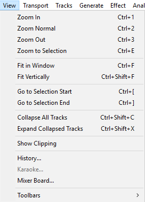
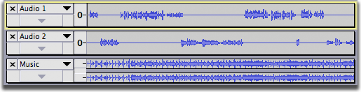
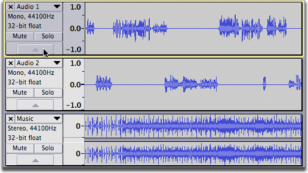
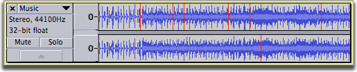
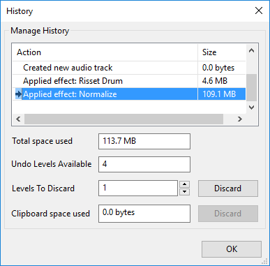
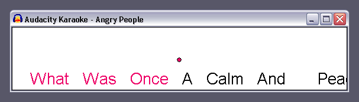

View Menu
From Audacity Development Manual
The View Menu
- Click, or hover, on any menu item in the image to read about that command.
- 
Zoom In CTRL + 1
Zooms in on the horizontal axis of the audio, displaying more detail over a shorter length of time. You can also use the zoom tool to zoom in on a particular part of the window.
Zoom Normal CTRL + 2
Zooms to the default view, which displays about one inch per second.
Zoom Out CTRL + 3
Zooms out, displaying less detail over a greater length of time.
Zoom to Selection CTRL + E
Zooms in or out so that the selected audio fills the width of the project window. Its most useful purpose is to zoom in when the selection is only a small part of the visible waveform.
Fit in Window CTRL + F
Zooms out until the entire project just fits in the width of the project window.
Fit Vertically CTRL + SHIFT + F
Adjusts the height of tracks so they fit in the vertical space of the project window if possible. All tracks that have not been collapsed using the Track Collapse Button or Collapse All Tracks menu item are resized so that each separate waveform has the same height. Accordingly mono tracks will have the same height as each other and stereo tracks will have the same height as each other (twice the height of the mono tracks).
For example, if you have two mono tracks with considerable space underneath them you can use this command to expand each track to fill half the available vertical space.
If you want tracks to automatically fit the vertical space without the need to use the Fit Vertically command, enable Automatically fit tracks vertically zoomed in Tracks Preferences.
Go to Selection Start CTRL + [
Attempts to move the left edge of the current selection to the center of the screen, without changing the zoom level. This is useful if you are zoomed far in at the right edge of the selection and then wish to view the left edge.which may be currently off screen. Also if you have lost sight of the selection entirely by scrolling too far, either this or the companion command "Go to Selection End" (below) will always bring the selection back on screen.
- Using either command after zooming in or out provides a keyboard method to zoom in or out on a selection edge. This is otherwise possible only by CONTROL and mouse wheel scroll while the mouse pointer is positioned at either selection edge.
- In some cases. either command may have no effect or the selection edge may not move fully to center if the selection is over to left or right so that the Timeline position cannot move sufficiently. For example, a selection wholly to left of the waveform center point cannot move if the visible left edge of the waveform starts at time zero.
Go to Selection End CTRL + ]
Attempts to move the right edge of the current selection to the center of the screen, without changing the zoom level. This is useful if you are zoomed far in at the left edge of the selection and then wish to view the right edge.which may be currently off screen. Also if you have lost sight of the selection entirely by scrolling too far, either this or the companion command "Go to Selection Start" ( above ) will always bring the selection back on screen.
Collapse All Tracks CTRL +SHIFT + C
Collapses all tracks to take up the minimum amount of space. To collapse or expand an individual track, click on the Track Collapse Button with triangle icon at the bottom of the track.
- 
Expand Collapsed Tracks CTRL + SHIFT + X
Expands all tracks that were collapsed using the Collapse button or Collapse All Tracks menu item to the height the tracks had before their last collapse.
- 
Show Clipping
Click this menu item to turn display of clipped samples on and off - a check mark in the item indicates that display is turned on. If turned on, individual or multiple clipped samples display as a red vertical line when in one of the waveform views. A sample is displayed as clipped if it touches or exceeds 0 dB and so touches or exceeds the volume envelope defined by +1.0 to - 1.0 on the vertical scale to left of the waveform.
A run of four or more consecutive clipped samples will also trigger the red clipping indicator in Meter Toolbar. A solid block of red in the waveform will almost certainly indicate multiple or extended runs of lost audio information above 0 dB, resulting in severe distortion. Avoid clipped samples where possible, for example by setting the recording level correctly. You may turn "Show Clipping" off if it behaves sluggishly on slower machines.
- 
History...
Brings up the History window which can then be left open while using Audacity normally. History lists all undoable actions performed in the current project, including importing. The right-hand column shows the amount of hard disk space each operation used and the total space used is shown in the first (uneditable) box beneath the list. In the project shown in the image below we normalized both the recorded track and the Risset Drum track, so Normalize took a little more space than that taken by the recording.
- 
If you discard Undo levels you can reclaim the disk space used by the project. To save the most space (removing ability to undo or redo any past edits), select the bottom Action in the list using the mouse or keyboard UP or DOWN arrow, increase "Levels to Discard" to the highest possible number then click "Discard".
You can also easily jump back and forth between editing steps by selecting the entries in the window. This can be quicker than choosing Undo and Redo multiple times from the Edit Menu.
See Undo, Redo and History for details on using the Undo History window.
Karaoke...
The Karaoke... command is enabled whenever you have at least one label track. If you have multiple label tracks, it uses only the first one.
The command brings up the Karaoke window, which displays the labels in a "bouncing ball" scrolling display. You can select a playback start point in the main tracks window and the Karaoke window will start from there.
- 
Audacity automatically puts a space between words, so you do not need to put them in your labels.
You may want to split up lyrics such that the ball bounces per syllable rather than just for the whole word. To do this, create a label for each syllable, and end each with a hyphen ("-"), except the last syllable. For example, "Aud-" "a-" "ci-" "ty". The hyphen tells Audacity to not put a space between the syllables, as it does between words. Note there may still be space between the syllables, depending on how far apart they are in the timeline and the size of the Karaoke window.
Mixer Board...
Mixer Board... is an alternative view to the audio tracks in the main tracks window, and is analogous to a hardware mixer board. Each audio track is displayed in a Track Strip. Each Track Strip has its own pair of meters, gain slider, pan slider, and mute/solo buttons, echoing that track's controls in its Track Control Panel. The Mixer Board... command is enabled whenever there's an audio track - it can even be brought up during playback.
For more details see the Mixer Board page.
Toolbars
Toolbars can be used to determine which of the Audacity toolbars are displayed. By default all toolbars are shown except Spectral Selection and Scrub. The Combined Meter is off by default too, choosing this will turn off the individual Recording and Playback Meters.
This is a list of the available Toolbars: Device, Edit, Combined Meter, Recording Meter, Playback Meter, Mixer, Selection, Spectral Selection, Tools, Transcription, Transport and Scrub
"Reset Toolbars" at the bottom of this group positions all toolbars as they were when Audacity was first installed.
Enter / Exit Full Screen (Mac only)
This menu item only appears on Mac OS X Lion and above. Enter Full Screen enters full screen state, occupying the entire display and hiding the Audacity menu bar and window buttons and the Dock. This is the same as clicking the green window button top left of the Audacity title bar. To leave Full Screen, hover your mouse at the top of the monitor to show the menu bar and window buttons then access View > Exit Full Screen or click the green window button.
The Mac keyboard shortcut "CONTROL + COMMAND + F" to toggle full screen does not work in Audacity and so does not appear alongside the Enter / Exit Full Screen menu items. Separate "App Shortcuts" for "Enter Full Screen" and "Exit Full Screen" can be added for Audacity in the Mac Keyboard Preferences, but it is probably easier to use Audacity's own shortcut COMMAND + / for "Full screen on/off" which performs the same full screen function.
| "Full screen on/off" is not interchangeable with the menu item or full screen button. Thus the Audacity shortcut cannot exit full screen entered by other methods, and the other methods cannot exit full screen entered by using the Audacity shortcut. |